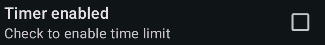

!! Please note that definitions are not available for all valid words !!
Word Finder vX.X
You can reshuffle the board by pressing the Cup&Dice button at the bottom
right:

or in the App Bar on top:

You can also access the Preferences settings from the APP Bar:

Word Finder vX.X
You can change the following settings:

Select which dictionary to use to check words and solve the board
 Select the scoring mode. Options are Word Count or Word Value
Select the scoring mode. Options are Word Count or Word Value
Select whether 3 letter words are allowed
Select whether prefixal words are automatically added to your result list when
entering the longer word
Word Finder vX.X
You can change the following settings:

Select whether you want to enable a time limit for each game.
The game time can be entered in the next preference if the time has been
enabled:

If the timer is enabled, the time is displayed at the top of the board during the
game:

Word Finder vX.X
© 2025 Carsten Friedrich
License: GPLv3
Acknowledgements
Alan Beale for the English
dictionaries
Gero Illing for theGerman
dictionary
Tobias Friedrich for the app icon design
Rafael Olivo Díaz and Denis Ignatov for the Letter
tile font
Letter tile background based on work by Rhos (@RhosGFX on Twitter)
Free
Dictionary API for English word definitions
Wiktionary
API for German word definitions